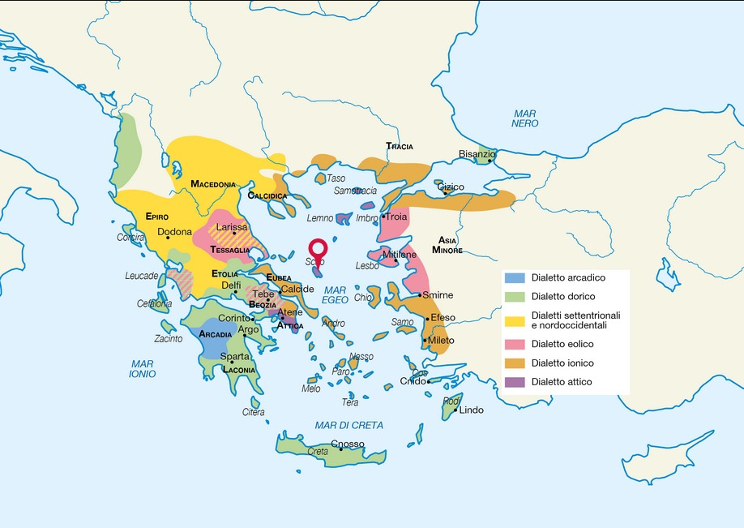

La letteratura greca alle sue origini non è "letteraria": nasce in un contesto che vede prevalere l'oralità sulla scrittura. La forma di comunicazione prediletta è infatti la voce, accompagnata da musica ed eseguita dal vivo. L'identità della Grecia antica deriva da due ondate di colonizzazione, dalla nascita di tre gruppi dialettali principali -dorico, ionico e corinzio- e dalla nascita della πόλις. Variegate per usi e costumi, le polis conobbero oligarchie, tirannidi e protodemocrazie, presso cui soggiornarono ogni sorta di poeti e intellettuali.
